知识图谱嵌入有较多方法，下面主要介绍转移距离模型TransX，语义匹配模型RESCAL等，考虑附加信息的模型。开源实现可以看OpenKE和Pykg2vec和OGB
TransX
TransX是转移距离模型，这些方法的重点是设计得分函数f(h,r,t)（正确三元组接近0得分高，错误三元组是大负数得分低），再利用下面的损失函数迭代嵌入向量
L=((h,r,t)∈S(h′,r,t′)∈S(h,l,t)′∑+[γ+f(h′,r,t′)−f(h,r,t)]+
其中γ是间隔距离超参数，S,S′分别是正确三元组和替换头尾实体的错误三元组。f(h,r,t)是各个方法中的得分函数，[x]+=x if x>0 else 0是正值函数
这里的损失函数与文章中的不同是因为得分函数前加了负号,a−b=(−b)−(−a)
Trans的意义是利用关系把头实体转移到尾实体，讲解可以看知识表示学习Trans系列梳理(论文+代码)
TransE
Translating Embeddings的基本思想是头实体在嵌入空间中经过关系向量的偏移可以得到尾实体
h+r≈t
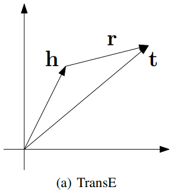
得分函数是
f(h,r,t)=−∣∣h+r−t∣∣22
TransH
Translalting on Hyperplanes是为了针对TransE中多对多实体嵌入同质化而提出。基本思想是对于每一种关系r都在对应的超平面(wr是平面的法向量)上建模实体
h⊥+dr≈t⊥
TransE的形象理解：假如有N对1的关系组，甲乙丙丁等头实体都有对尾实体戊的关系“喜欢”，当尾实体和关系相同时，不同的头实体因为h=t−r会有同质的嵌入表示
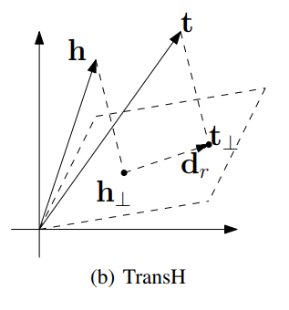
得分函数是超平面上差距
f=−∣∣(h−wrThwr)+dr−(t−wrTtwr)∣∣22
h⊥=h−wrThwr如何得到的推导可以看投影矩阵，h投影到超平面法向量上是xw=wTwwThw，由于∣∣wr∣∣22=wTw=1，因此垂直部分h⊥是原向量减去投影的向量wThw
TransR
Relation Embeddings在TransE和TransH的基础上提出，可以将实体和关系映射到不同的语义空间。在原来实体空间中相似的实体可能很接近，但对不同关系而言，它可能对应实体的不同属性，映射到语义空间后的头尾实体将不再接近，表达了不同关系对相似实体的属性选择，提高了模型的表达能力。对于每一种关系r存在对应映射矩阵Wr将实体映射到关系r所在的空间
hMr+r=tMr
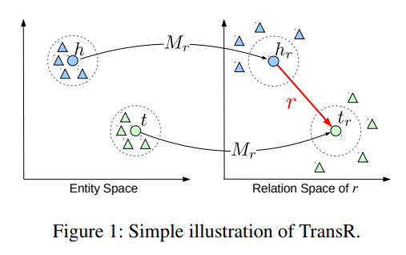
对应的得分函数是
f=−∣∣hMr+r−tMr∣∣22
TransD
Embedding via Dynamic Mapping Matrix在TransR的基础上提出，为了解决TransR的问题：
- 同一关系r下头尾所在的语义空间可能不同，比如（美国，总统，奥巴马），美国是一个实体，代表国家，奥巴马是一个实体，代表的是人物。TransR在类似（甲，喜欢，乙）这样的头尾实体在同一空间中的三元组表现才合理
- 关系投影矩阵Mr只通过关系r得到不合理，因为具体关系涉及到头尾实体，应该考虑头尾实体的内容
- TransR参数太多，计算复杂度高
TransD将投影矩阵改进为Mrh和Mrt，每个对象（包括实体和关系）都对应两个向量：h或t或r用来表示语义信息，hp或tp或rp用来表示投影向量(h,t,hp,tp∈Rm,r,rp∈Rn)。
Mrh=rphpT+Im×nMrt=rptpT+Im×nh⊥=Mrhht⊥=Mthth⊥+r≈t⊥
其中I是初始化矩阵
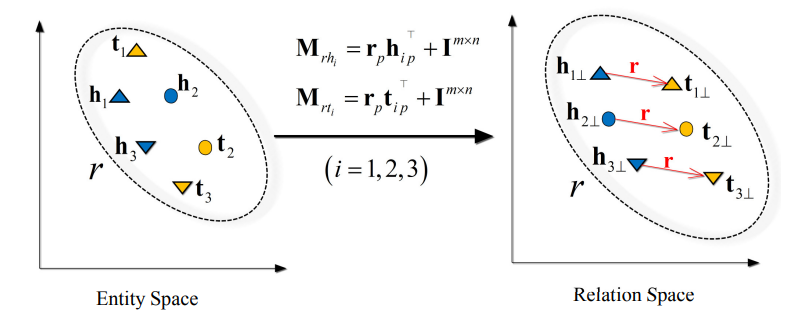
对应的得分函数是
f=−∣∣h⊥+r−t⊥∣∣22
TransA
Adaptive Approach for Knowledge Graph Embedding为了解决以上模型的两个问题
- 得分函数太简单不具备灵活性
- 实体和关系向量的每一个维度都同等对待，不同维度的重要性应该不一样，有些维度可能是噪音
不同对待维度有点像attention?
TransA对嵌入向量的不同维度加权，调整了得分函数，在训练的时候对参数进行了L2范数惩罚
f=(∣h+r−t∣)TWr(∣h+r−t∣)
得分函数中包含取绝对值操作，原文对此进行了解释
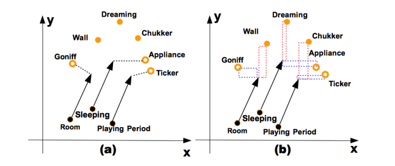
TransG
Generative Model for Knowledge Graph Embedding解决的问题与TransR类似，一种关系可能存在多种语义，TransG用生成模型产生嵌入向量，得分函数和也做了修改
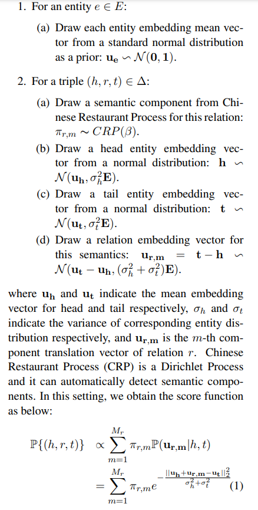
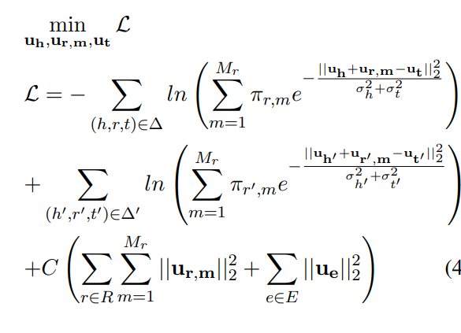
TranSparse
Adaptive Sparse Transfer Matrix解决知识图谱嵌入中的两个问题：
- 异质性：某些关系链接了非常多的实体对是复杂关系，而有些关系链接的非常少，是简单关系，比如"包含"关系可能有非常多的实体链接情况，而"相等"关系链接的实体就很少
- 不平衡性：某些关系链接的头尾实体的种类和数量差别大。比如"性别"关系，头节点可能包含大量人名，而尾节点只有"男"女"两种节点
TranSparse认为复杂的关系应该有更多的参数建模，而简单关系用更少的参数学习。TranSparse用稀疏矩阵代替TransR的稠密矩阵。稀疏矩阵稀疏度θr可以针对任务需求：
- 针对异质性问题提出TranSparse(share)：
θr=1−Nr∗(1−θmin)Nrhp=Mr(θr)h tp=Mr(θr)t
每种关系对应一个稀疏矩阵，Nr是关系链接的实体对数量，Nr∗表示链接最多实体对的关系链接的实体对数量，θmin是超参数，取值在[0,1]
- 针对不平衡性提出TranSparse(separate)：
θrl=1−Nr∗l∗(1−θmin)Nrl(l=h,t)hp=Mrh(θrh)h tp=Mrt(θrt)t
每种关系对应两个稀疏矩阵分别映射头尾节点，稀疏度也根据两个端点处实体的数量调整
损失函数和TrnasR一致
f=−∣∣hp+r−tp∣∣22
语义匹配模型
相比TransX模型，语义匹配模型更注重挖掘向量化后实体和关系的潜在语义，采用基于相似性(向量内积，而不是TransX中的向量加减)的打分函数，通过匹配实体和关系在嵌入向量空间中的潜在语义衡量三元组事实成立的可能性。该方向的模型主要是RESCAL以及它的延伸模型。解读可以看这个系列的文章
基于相似性的得分函数慢慢发展为基于神经网络的模型
RESCAL
RESCAL是基于张量分解的模型，定义的χ∈Rn×n×m张量如下
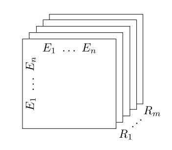
每种关系对应一个图的邻接矩阵
对χ进行张量分解
χk≈ARkAT,fork=1,...m
得到的A∈Rn×r是因子矩阵，每行代表一个实体嵌入向量h∈Rr（注意这里对所有的Rk用的是同一个A），Rkr×r是核心张量Rr×r×m中的一个切片，是关系k的嵌入表示矩阵，它是不对称矩阵，可以表示非对称关系。根据核心张量和因子矩阵还原的结果被看做对应三元组成立的概率，如果概率大于某个阈值则对应的三元组正确，对应的打分函数可以表示为
fk(h,t)=hTRkt
训练模型类似TransX中的方法，只是打分函数替换为上面的fk，而没有用下面的损失函数，只从代码看也体现不出原文表示的张量分解的意思在…
损失函数包括了正则化项
L=f(A,Rk)+g(A,Rk)=21(k∑∣∣χk−ARkAT∣∣F2)+21λ(∣∣A∣∣F2+k∑∣∣Rk∣∣F2)=21(k∑∣∣χk−ARkAT∣∣F2+λ1∣∣A∣∣F2+λ2k∑∣∣Rk∣∣F2)
对每一种关系Rk分别进行分解都得到相同的实体表示向量A，这样的分解机制可用利用有相同关系的实体的信息建模，文章中称为collective learning，类似推荐系统中的协同过滤
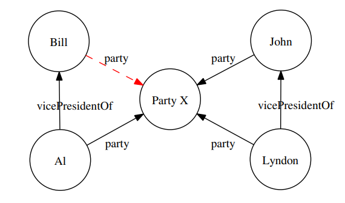
对关系是party的关系表示矩阵Rparty，建模Bill就能用到John和Lyndon的向量来表示
χparty≈ARpartyAT=hBillRpartyhPartyX+hJohnRpartyhPartyX+hLyndonRpartyhPartyX+...
DistMult
DistMult通过限制RESCAL中的关系矩阵为对角阵diag(k)简化模型
解读文章中提到的个人感受很受用:（看 related work 有感：第一点是，一直不知道 related work 该写什么、怎么写。我写论文一个很大的问题是一开始的引入总是从很大很宏观的角度，本想由浅入深引到自己的工作上，但是由于一开始没有聚焦，并且一写开就刹不住车，所以会有一种顾左右而言他、文不对题的感觉，小论文、开题报告里都有这个问题。这篇的 related work 就是由浅入深，先列出 multi-relational learning 的一些方法，然后详细介绍了 NTN，然后引到自己的规则抽取工作（虽然中间少了点衔接）。以后我在写 related work 也要再聚焦一些，多说与自己工作有密切关联的相关工作；第二点是 DistMult 这篇文章，模型本身的改进几乎没有，很鸡肋，但是它把展示的重点放在了规则挖掘上，这就是扬长避短的作用了，就像衣服的穿搭，身材不好也没有关系，关键是如何凸显优势、弱化劣势。）
实体嵌入向量表示为实体表示矩阵和one-hot向量的乘积（查表）之后的转换向量，转换函数f可以是线性或非线性函数。关系嵌入矩阵是对角矩阵Mr，得分函数gr与RESCAL一致，采用双线性函数
ye=f(Wxe)gr(ye1,Mr,ye2)=ye1TMrye2
训练模型类似TransX中的方法，只是打分函数替换为上面的fk。因为Mr是对角阵，实际代码实现的时候是直接把关系嵌入表示为向量而不是矩阵
LFM
LFM想要解决的问题是
- 大量关系类型只是所有关系中的一小部分（长尾现象）
- 数据集质量差且数据少
LFM根据三元组成立的概率来进行打分，获得打分函数。如果三元组(h,R,t)成立，即是
P(h,R,t)=1
其中h,t是实体嵌入向量，R是关系嵌入矩阵
文章建模概率为下面的函数
P(h,R,t)=σ(f(h,R,t))σ(x)=1+e−x1
文章主要重新定义了打分函数f，引入参数y,y′,z,z′∈Rp
f(h,R,t)=yTRy′+hTRz+z′TRt+hTRt
为了解决长尾问题引起的过拟合（关系数量多的时候，某些关系下的样本数量少），文章提出将关系矩阵分解为d个秩一矩阵，这样可以使得不同关系共享参数，对于n种关系，任一关系j的嵌入矩阵
Rj=i=1∑dαrjΘr,Θr=urvrT,ur,vr∈Rp
这样关系j只有参数αj∈Rd控制秩一矩阵的组成来构造嵌入表示，只要d≪n就能保证关系矩阵不会过拟合，同时由于关系矩阵都是同一套秩一矩阵构造，可以做到参数共享，也能降低过拟合风险
模型训练是最大化似然概率，由于LFM建模概率是
P(h,R,t)=σ(f(x))
和Logistic模型类似，最后得到的目标函数也大同小异
NTN
Neural Tensor Networks提出了用于知识库补全的神经网络框架，打分函数中同时包含双线性函数和线性函数，用词向量的平均作为实体表示，打分函数是
g(h,R,t)=uRTtanh(hTWR[1:k]t+VR[ht]+bR)
WR是张量，切片对应某个关系，uR,WR,VR,bR都是针对关系R的参数，uR在实现中是关系的嵌入向量
将打分函数中的双线性部分hTWR[1:k]t去掉是SLM(Single Layer Model)模型，LFM是纯双线性函数，这里的SML是纯线性模型，因此NTN即是SLM和LFM的联合
SME
Semantic Matching Energy Function的得分函数形式是
ε(h,r,t)=gleft(h,r)Tgright(r,t)
h,r,t∈Rd
根据g函数的区别有两个版本的SME
g(e1,e2)=W1e1T+W2e2T+bT
W1,W2∈Rp×d,b∈Rp
g(e1,e2)=(W×3e1T)e2T+bT
W1,W2∈Rp×d×d,b∈Rp,(W×3e1T)是沿着第三个维度的相乘,可以理解为以e1的权重给d个W∈Rp×d加权相加。代码实现中实现的不是上面的形式(可能是为了减少参数量?)而是
g(e1,e2)=(W1e1T)⋅(W2e2T)+bT
TATEC
Two And Three-way Embeddings Combination混合二元交互和三元交互，分别进行预训练并进行联合微调，并且没有参数共享。头尾实体和关系都对应两个嵌入向量，打分函数是
s(h,r,t)=s1(h1,r,t1)+s2(h2,r,t2)s1(h1,r,t1)=r1Th1+r2Tt1+h1TDt1s2(h2,r,t2)=h2TRt2
D是与三元组无关的对角阵，R是与关系对应的矩阵
使用负采样训练模型，先分别训练二元和三元交互，用训练得到的权重初始化整个模型，之后用SGD微调模型
HolE
Holographic Embeddings提出双线性模型的统一形式是
Pr(h,r,t)=σ(rT(h∘t))
其中各种方法的组合操作∘不同，产生了不同的模型。本文提出的操作是循环关联circular correlation
h∘t=h⋆t [h⋆t]k=i=0∑d−1hit(k+i)
循环关联操作可以被视为张量积（hardamard积）的压缩，可以保证有较少计算量的同时有更多的交互

ComplEx
Complex Embedding主要思想是引入复值向量，取点积的实部部分作为得分。三元组成立的概率是
Pr(h,r,t)=σ(ϕ(h,r,t))
h,r,t∈Ck，都是k维复向量
对于某个关系l而言，可以用邻接矩阵表示，在复空间中做特征分解
Xl=EWlEH
由于Xl是只有实部的对称阵，因此XH=X，因此XHX=XXH，是正规矩阵。E是特征向量矩阵，只取特征值的前k个值，此时Wl=diag(r),r∈Ck,可以利用特征值分解压缩原矩阵，规定的得分函数是
ϕ(h,Rl,t)=Re(hTWltˉ)
关于正规矩阵的内容看《矩阵分析与应用》2.3。嵌入向量是E∈Cn×k的某一行，关系l的嵌入矩阵是W∈Ck×k
推广到多类型关系，每个关系都有嵌入向量r∈Ck，得分函数是
ϕ(h,r,t)=Re(k=1∑khkrktkˉ)
复向量的内积aHb=bHa不具有交换性，因为实部相等而虚部不相等，实部对称建模对称关系，虚部不相等建模非对称关系（不是很理解?）
NAM
Neural Association Models是神经网络模型，将事件E1输入，用sigmoid或softmax计算得到E2的概率，损失函数是最大化似然函数。对知识图谱嵌入表示而言，E1=(h,r),E2=t，有两种计算结构：
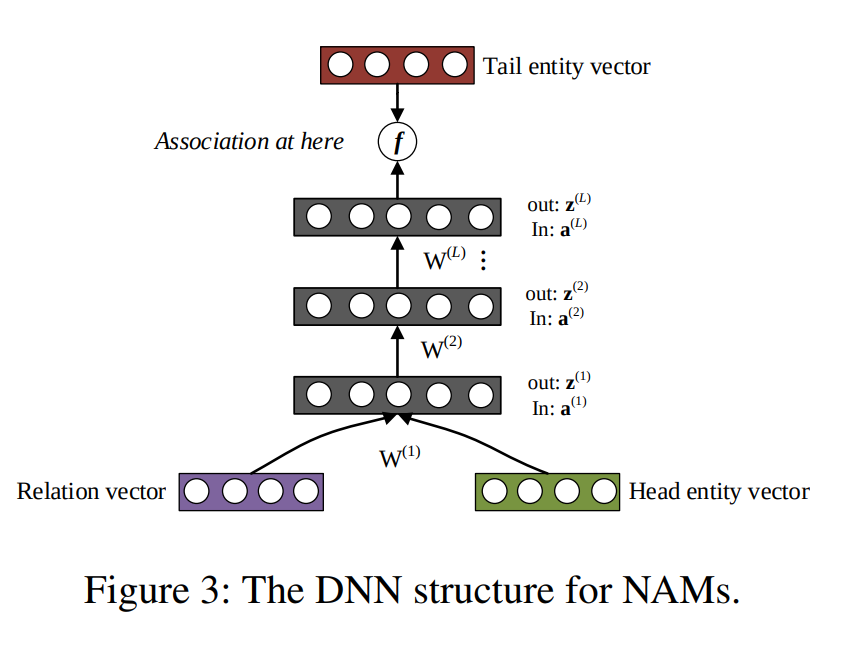 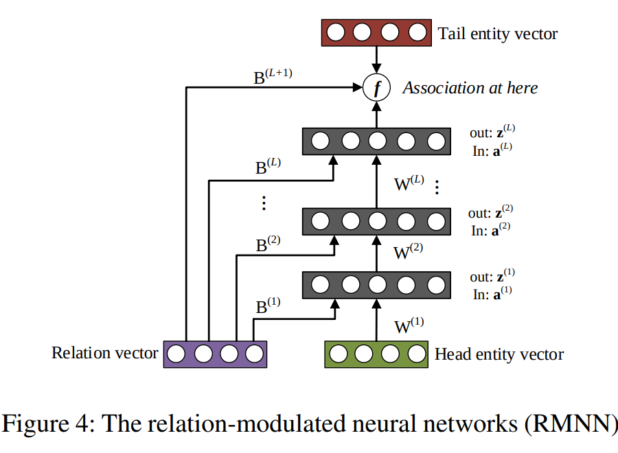
ANALOGY
Analogical Inference将关系矩阵约束为正规矩阵ATA=AATT，基于双线性类模型的体系，头实体经过关系映射后近似于尾实体，打分函数也是双线性函数
hTW≈tTϕ(h,r,t)=hTWt
为了使得关系满足类比推理的情况，如下图
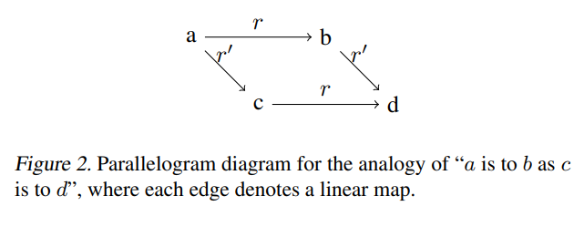
理解类比推理 man is to king as woman is to queen.
建模得到的嵌入向量和关系矩阵应该满足应该满足a→d的两条转换路径等价
r∘r′=r′∘r
因此ANALOGY建模时添加约束WrWr′=Wr′Wr
利用打分函数的得分计算三元组成立概率，模型训练为有约束条件的损失函数最小化
l(ϕ(h,r,t),y)=−logσ(yϕ(h,r,t))
原文还提到了ANALOGY在某些情况下可以转化为其他模型的得分函数，因此覆盖范围更广，表达力更好。ANALOGY实现中似乎之和ComplEx实现差最后一项
CP
Canonical Tensor Decomposition主要是对老方法的探究，新房法是核 p-范数 正则化
li,j,k(X)=−Xi,j,k+log(k′∑exp(Xi,j,k′))−Xk,j+P,i+log(i′∑exp(Xk,j+P,i′))
没看懂(也没细看)这篇文章，X应该是像RESCAL中的图张量一样，这里是直接用Xi,j,k指代了分解得到的h⊗r⊗t吗?，第三项中的P和k′,i′具体是什么没有弄懂，如果要细读文章优先解决这些问题
SimplE
Simple Embedding对1927年的CP(Canonical Polyadic)做简化，CP为每个实体分配两个嵌入向量，即作为头尾实体的时候是不同的向量表示，两个向量分别学习。SimplE仍然保持为每个实体e分配两个向量he,te∈Rd，为每个关系r也分配两个向量vr,vr−1∈Rd。对每个三元组(ei,r,ej)定义相似度函数（得分函数）
ϕ(ei,r,ej)=21(<hei,vr,tej>+<hej,vvr−1,tei>)
<a,b,c>根据实现来看似乎就是向量对应位置相乘之后相加
训练的时候用上面的得分函数，预测的时候值用前半部分（文章中叫SimplE-ignr），相当于三元组(ei,r,ej)定得到的嵌入向量还是hei,vr,tej，训练时采用softplux，没有选择margin-based 的 loss 是因为它比 log-likelihood 更容易导致过拟合（文章原话，有参考文献）
loss=softplux(−lϕ(ei,r,ej))+λ∣∣θ∣∣22softplux(x)=log(1+exp(x))
实现中没有明显有正则项的存在，l∈{1,−1}是label，实际就是softplux(-正得分)+softplux(负得分)
CrossE
Interaction Embeddings引入矩阵计算实体和关系的crossover interaction（即关系影响实体，实体影响关系），计算头实体和关系的组合表示与尾实体的相似性
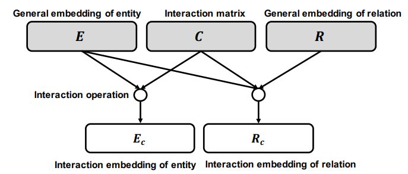
打分函数是
f(h,r,t)=σ(tanh(cr∘h+cr∘h∘r+b)tT)
∘是hadamard积，cr是从Interaction matrix C中用r的one-hot得到的嵌入向量，实际实现就是有三个embedding层，实体，关系和交互矩阵的embedding
博主这里的感悟：在这篇文章中学到/想到的一点是，如果方法/idea不是那么高端的话，可以通过多做实验另辟蹊径来弥补，如本文如果只做了 crossover interaction 的工作的话，就会显得单薄和鸡肋，但是因为加上了 explanation 这样一个工作重点，就会显得比较详实。
RotatE
Rotation Embedding希望建模三种类型的关系：关系是对称的，某两个关系是相反的，某三个关系是可传递的
关系的性质可以看离散数学
RotatE是复空间中的双线性模型，希望三元组满足t=h∘r，即复数向量间的点对点乘积,由于单位复数可以视为旋转变换，因此可以理解为头实体经过关系的旋转变换成为尾实体
ti=hiri,hi,ri,ti∈C,∣ri∣=1
一个线性变换（包括旋转变换）是对应一个矩阵，任何一个复数可以看成一个二维向量，一个复数（向量）可以拆解成一个另一个二维向量和二阶矩阵的乘积，拆解的特例就是一个模长不变而角度变化（旋转）的线性变换，所以一个复数能分解成一个旋转变换的结果。两个复数的加减法，对应两个向量的加法；两个复数相乘，对应两个向量的模相乘（缩放）和角度相加（旋转）。
距离函数是
d(h,r,t)=∣∣h∘r−t∣∣
原文附录提到了为什么建模的RotatE可以表示三种类型的关系
训练类似TransX的方式，但对负样本进行了赋权p(h′,r,t′)（原文叫self-adversarial），实现中是由adv_temperature代表的
loss=−logσ(γ−d(h,r,t))−i=1∑np(h′,r,t′)logσ(d(h′,r,t′)−γ)
TuckER
Tensor Factorization for entities relations可以看这里